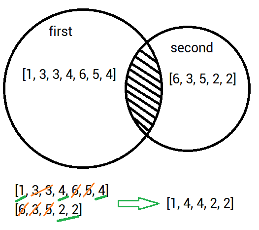

Difference between list of Integers Find difference between two lists of Integers [1, 3, 3, 4, 6, 5, 4] & [6, 3, 5, 2, 2]
Functional Requirements
Implement a logic that finds difference between "first" and "second" lists and prints the result to the console.
Solving:

All magic in console ;-)